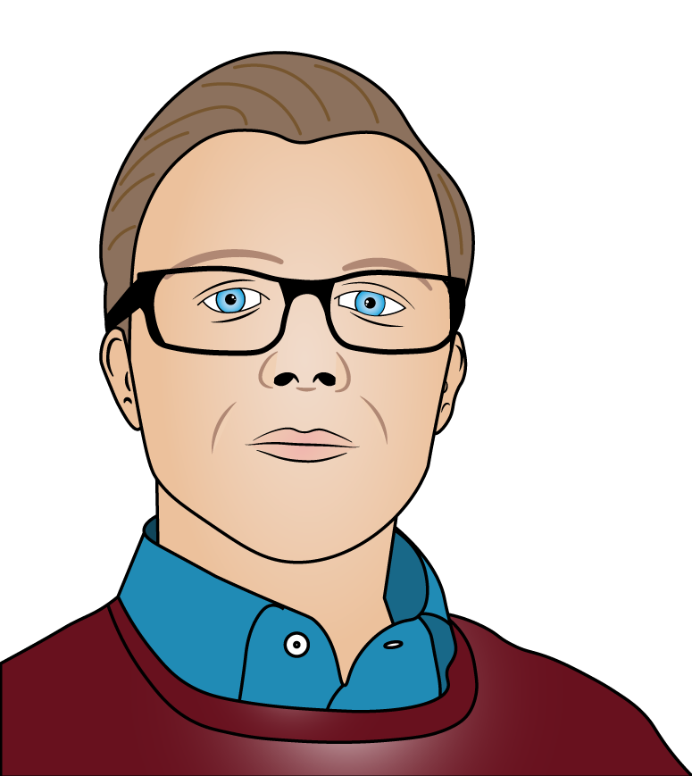
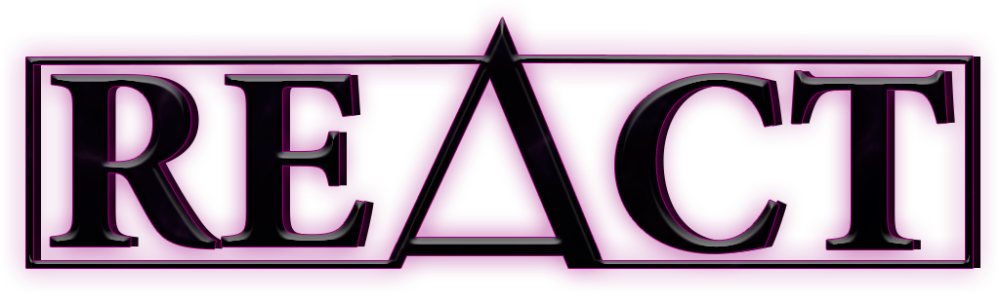
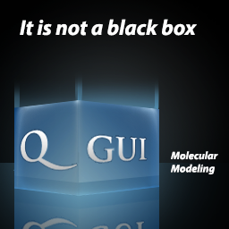

Geir Villy Isaksen#
Status quo: Research software engineer at NRIS - Norwegian research infrastructure services / UiT 
{kind=link}
Hello world, my name is Geir. I have a Ph.D in molecular sciences/ computational chemistry. When I began my university studies back in 2005 I knew little about the “computational” part. When I first became familiar with molecular modeling and computer simulations, both my interests and my planned academic path started shifting.
After a bachelor's degree in chemistry, I ended up doing a Master's degree in chemistry/structural biology (2008-2010) as a 50/50 mix between experimental and theoretical work. I must however admit that I have not set foot in a wet-lab ever since. During my Ph.D (2010-2015) I focused on theoretical work and software development. After my Ph.D I did a post-doctoral period in Uppsala, Sweden, followed by several productive years as a senior researcher. My interests in coding, graphical design and software development was growing every year, and it, better late than never, came clear to me that this is what I really want to do.Iteratively improving Self-taught skills I know (or used to know):
HPC Python OOP Virtual environment Anaconda Conda
Qt PyQt Bash CSS HTML Markdown
Github Gitlab Git Tkinter Objective-C
Javascript MAC OS Linux Stackoverflow
Adobe Photoshop Adobe Illustrator PERL FORTRAN SLURM Matplotlib C# SQL
Expertise & key skills#
Pioneering research and dissemination with publications in world leading journals such as Nature Reviews, Proceedings of the National Academy of Sciences and Accounts of Chemical Research
Recognized international partners, both theoretical and experimental, such as Professor Johan Åqvist and Professor Maria Selmer through the 5-year project “Evolution of new genes and proteins” with funding from the Knut and Alice Wallenberg Foundation.
More than 14 years of teaching experience as both course coordinator and lecturer. Has been responsible for own courses, subject plans, laboratory experiments, examination and grading.
Broad professional background ranging from experimental techniques such as X-ray crystallography and isothermal titration calorimetry to theoretical methods such as empirical valence binding (EVB) and ab initio methods (QM).
Software developer (Python, PyQt, Tkinter, fortran, bash, objective-C) with, among others, the graphical user interface “Qgui”, which has users all over the world. Qgui is also used regularly in teaching context at both Uppsala University and the University of Tromsø.
Software development#
chemREACT#
{kind=link}
appNRIS#
{kind=link}
cliNRIS#
{kind=link}
Qgui#
{kind=link}
QresFEP / Qgui 2.0#
{kind=link}
Web pages & graphical design#
Websites with HTML/CSS/JS have not been what I have spent the most time on throughout the years. But, besides the page that we are on right now, I have once upon a time also created and/or contributed to these sites:
Playmol#
I created this site more or less from scratch (html/css). It served online 2012 - 2013.
Brandsdal Group#
This is a site I made for my Ph.D supervisor’s research group in 2014 and maintained it up until around 2016. - View source @ github
CUBE3#
All graphical design created by me - webpage created with WordPress
The Norwegian academic high-performance computing and storage services#
Joint collaboration between UiT, UiO, UiB, NTNU and UNINETT Sigma2 where I have contributed particularly to the the software / application documentation of Schrödinger
Publications#
[19] Isaksen, Geir Villy; Guo, Xiaohu; Söderholm, Annika; Kunchugal P, Sandesh; Warsi, Omar; Eckhard, Ulrich; Trigüs, Silvia; Gogoll, Adolf; Jerström-Hultqvist; Åqvist, Johan; Andersson, Dan I; Selmer, Maria. Structure and mechanism of a phage-encoded SAM lyase revises catalytic function of enzyme family. eLife (2021); DOI: 10.7554/eLife.61818
[18] Socan, Jaka; Isaksen, Geir Villy; Brandsdal, Bjørn Olav; Åqvist, Johan. Towards rational computational engineering of psychrophilic enzymes. Scientific Reports Nature Research (2019); DOI 10.1038/s41598-019-55697-4
[17] Jespers, Willem; Isaksen, Geir Villy; Andberg, Tor A.H.; Vasile, Silvana; Veen, Amber van; Åqvist, Johan; Brandsdal, Bjørn-Olav; Guitérrez de Terán, Hugo. QresFEP: an automated protocol for the free energy calculation of protein mutations in Q. J. Chem. Theory Comput. (2019); DOI: 10.1021/acs.jctc.9b00538
[16] Socan, Jaka; Kazemi, Masoud; Isaksen, Geir Villy; Brandsdal, Bjørn Olav; Åqvist, Johan. Catalytic adaptation of psychrophilic elastase. Biochemistry (2018); DOI 10.1021/acsbiochem.8b00078
[15] Åqvist, Johan; Isaksen, Geir Villy; Brandsdal, Bjørn Olav. Computation of enzyme cold adaptation. Nature Reviews Chemistry (2017); DOI 10.1038/s41570-017-0051
[14] Michetti, Davide; Brandsdal, Bjørn Olav; Bon, Davide; Isaksen, Geir Villy; Tiberti, Matteo; Papaleo, Elena. A comparative study of cold- and warm-adapted endonuclease A using sequence analyses and molecular dynamics simulations. PLoS ONE (2017); DOI 10.1371/journal.pone.0169586
[13] Åqvist, Johan; Kazemi, Masoud; Isaksen, Geir Villy; Brandsdal, Bjørn Olav. Entropy and enzyme catalysis. Accounts of Chemical Research (2017); DOI 10.1021/acs.accounts.6b00321
[12] Isaksen, Geir Villy; Brandsdal, Bjørn Olav; Åqvist, Johan. Thermodynamics of the purine nucleoside reaction revealed by computer simulations. Biochemistry (2016) ;doi: 10.1021/acs.biochem.6b00967
[11] Isaksen, Geir Villy Is enzyme design becoming less fiction and more science? CTCC – Annual report 2015 (2016); s. 8-9
[10] Isaksen, Geir Villy; Brandsdal, Bjørn Olav; Åqvist, Johan. Enzyme surface rigidity tunes the temperature dependence of catalytic rates. Proceedings of the National Academy of Sciences of the United States of America (2016); Volum 113.(28) s. 7822-7827
[9] Isaksen, Geir Villy; Hopmann, Kathrin Helen; Åqvist, Johan; Brandsdal, Bjørn Olav. Computer Simulations reveal substrate specificity of glycosidic bond cleavage in native and mutant human purine nucleoside phosphorylase. Biochemistry (2016); Volum 55. s. 2153-2162
[8] Isaksen, Geir Villy. Datasimuleringer baner vei for enzymdesign. NKS - Kjemi (2015); Volum 4. s. 4-7
[7] Isaksen, Geir Villy. Protein dynamics regulates enzyme enthalpy-entropy balance. UiT The Arctic University of Norway (2015); (ISBN 978-82-8236-178-1) 65 s.
[6] Isaksen, Geir Villy; Andberg, Tor Arne Heim; Åqvist, Johan; Brandsdal, Bjørn Olav. Qgui: A high-throughput interface for automated setup and analysis of free energy calculations and empirical valence bond simulations in biological systems. Journal of Molecular Graphics and Modelling (2015); Volum 60. s. 15-23
[5] Isaksen, Geir Villy; Åqvist, Johan; Brandsdal, Bjørn Olav. Protein surface softness is the origin of enzyme cold-adaptation of trypsin. PloS Computational Biology (2014); DOI 10:e1003813.(8)
[4] Karstad, Rasmus Tørnes; Isaksen, Geir Villy; Wynendaele, Evelien; Guttormsen, Yngve; De Spiegeleer, Bart; Brandsdal, Bjørn Olav; Svendsen, John Sigurd; Svenson, Johan. Targeting the S1 and S3 Subsite of Trypsin with Unnatural Cationic Amino Acids Generates Antimicrobial Peptides with Potential for Oral Administration. Journal of Medicinal Chemistry (2012); Volum 55.(14) s. 6294-6305
[3] Flaten, Gøril Eide; Kottra, Gabor; Stensen, Wenche; Isaksen, Geir Villy; Karstad, Rasmus Tørnes; Svendsen, John Sigurd; Daniel, Hannelore; Svenson, Johan. In Vitro Characterization of Human Peptide Transporter hPEPT1 Interactions and Passive Permeation Studies of Short Cationic Antimicrobial Peptides. Journal of Medicinal Chemistry (2011); Volum 54.(7) s. 2422-2432
[2] Isaksen, Geir Villy Flexible membrane active antimicrobial tripeptides with stability towards chymotryptic degradation. UiT The Arctic University of Norway (2010)
[1] Karstad, Rasmus Tørnes; Isaksen, Geir; Brandsdal, Bjørn Olav; Svendsen, John Sigurd; Svenson, Johan. Unnatural Amino Acid Side Chains as S1, S1 ‘, and S2 ’ Probes Yield Cationic Antimicrobial Peptides with Stability toward Chymotryptic Degradation. Journal of Medicinal Chemistry (2010); Volum 53.(15) s. 5558-5566